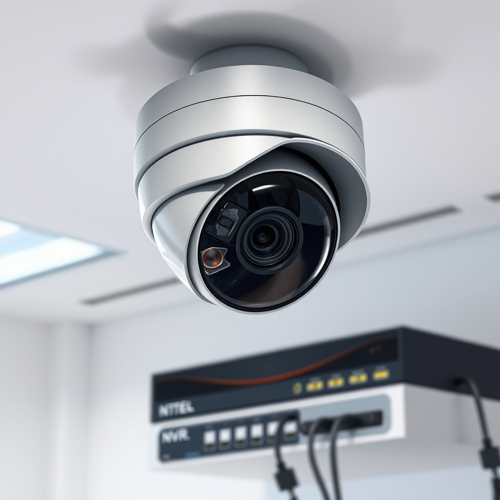

2026-10-30 · Propozycja do akceptacji
Rejestrator – czy jest niezbędny?
Pytanie klienta: Czy potrzebuję rejestratora do kamer?
Wiele osób pyta, czy do systemu kamer IP potrzebny jest rejestrator. Odpowiedź nie jest jednoznaczna – wszystko zależy od Twoich potrzeb. Jeśli chcesz mieć stały zapis obrazu, lokalną kopię zapasową i możliwość przeglądania zdarzeń offline, warto zainwestować w rejestrator NVR (Network Video Recorder). Daje to kontrolę nad jakością nagrań, pojemnością dysków i dostępem bezpośrednim z telefonu. Jeśli jednak preferujesz rozwiązania chmurowe, niektóre kamery oferują własny serwis przechowywania, co eliminuje konieczność fizycznego rejestratora, ale wymaga stałego łącza internetowego i może wiązać się z opłatą abonamentową. W praktyce większość właścicieli domów i małych firm wybiera hybrydę – rejestrator jako podstawę i dodatkowy backup w chmurze dla jeszcze większego bezpieczeństwa. Masz wątpliwości, co będzie najlepsze dla Twojej nieruchomości? Napisz do nas, jeśli chcesz dobrać monitoring do swojej nieruchomości. #monitoring #kameryIP #bezpieczeństwo #technologia
Nie użyto trendu, post opiera się na ponadczasowych informacjach o rejestratorach i kamerach IP.